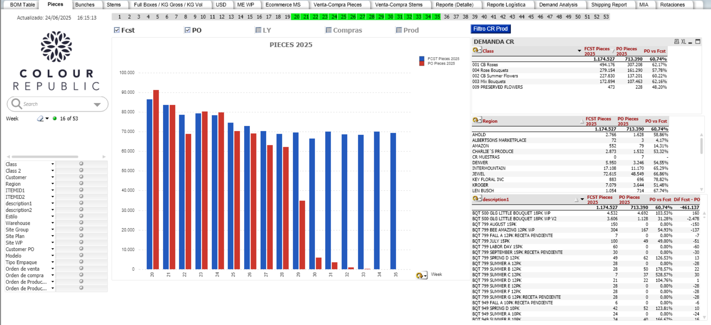

Objetivo: Desarrollar una herramienta visual que permita al área de Supply Chain comparar la demanda proyectada, las ventas reales y las órdenes de compra, facilitando la toma de decisiones para el abastecimiento oportuno.
Herramientas utilizadas: QlikView · SQL Server · Power Automate
Rol: Líder de proyecto y desarrollador principal
Descripción: Diseñé e implementé un dashboard interactivo que compara las piezas proyectadas (FCST) con las piezas ordenadas (PO) a lo largo de las semanas del año. El tablero incluye filtros dinámicos por clase, cliente, región y tendencias, y permite a los usuarios explorar los datos de forma detallada. También se integró con Power Automate para automatizar actualizaciones y alertas.
Impacto: El área de Supply Chain utiliza activamente este dashboard para monitorear el cumplimiento de la demanda y ajustar el abastecimiento, mejorando la eficiencia operativa y reduciendo riesgos de desabasto.
Captura del dashboard:
